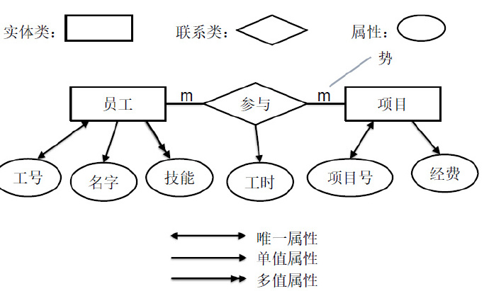

如何设计关系数据库？
数据库设计流程
- 需求分析
- 了解用户需求，确定软件的基本功能。
- 概念模型设计
- 确定数据库需要记录哪些信息。
- 逻辑结构设计
- 确定数据的组织形式。
- 数据库物理设计
- 确定数据的存储方式、索引使用系统配置等。
- 数据库实施
- 安装 数据 库管理系统、创建、调试运行 。
- 数据库设计演进
- 根据需求的扩展与变化，对以上结果进行调整和变更
文档型数据库
对于文档型数据库，需要确定
- 数据库要记录那些对象
- 对象之间的关系以及文档结构（embedding or reference）
关系数据库
对于关系数据库，需要确定
- 数据库要记录那些实体和联系(ERD)
- 关系的基本定义
- 优化关系的定义
关系数据库设计基本概念
- 逻辑设计
- 只跟概念有关，与应用无– 概念模型、逻辑独立于应用
- 最小化对应用程序的依赖
- 物理设计
- 物理模型与应用相关
- 优化应用的性能
- 概念模型和物理模型
- 严格意义上，二者是两套模型
- 现实的 RDBMS RDBMS 很难区分（物理设计只是对逻辑的优化）
ER图
E：Entity Entity（实体）
R：Relationship（联系）
基本概念：
- 世界由实体组成。
- 实体由属性刻画。
- 实体之间存在联系。
- 实体可分类，别确定的属性。
组成
- 实体（ Entity Entity ）
- 现实世界中可以被标识的具体事物。
- 姚明（身份证号）
- 我的一辆福特汽车（牌号）
- 实体类（ Entity Type Entity TypeEntity Type ）
- 具有相同属性的实体集合。
- 人
- 联系（ Relationship）
- 现实世界中事物内部以及之间的联系，在 ER 图中反映为实 图中反映为实体内部的联系和实之间。
- 我和的银行账户之间联系；
- 联系类（ Relationship Type）
- 涉及特定实体类之间，并且具有相同属性的联系集合。
- 联系类的势（ Cardinality ）
- 一对联系（ 1:1 ） 人-身份证、夫妻
- 一对多联系（ 1:m/m:1 ）人 -出生地、父子
- 多对联系（ m:m ） 学生 -课
- 属性（ Attribute）
- 对于实体类（或联系类），属性是描述该对于实体（或联 系）的某种特征结构。
- 身高是人的一种属性。
- 对于实体（或联系），属性是描述该实体的某个特征的数据
- 姚明的身高为 2.29米。
- 对于实体类（或联系类），属性是描述该对于实体（或联 系）的某种特征结构。
- 属性的势（ Cardinality）
- 唯一属性（ 1:1 1:1） 人- 身份证号
- 单值属性（ m:1 ） 人- 生日、人 - 名字
- 多值属性（ 1:m/m:m） 人-技能、人 - 作品
表示方法
